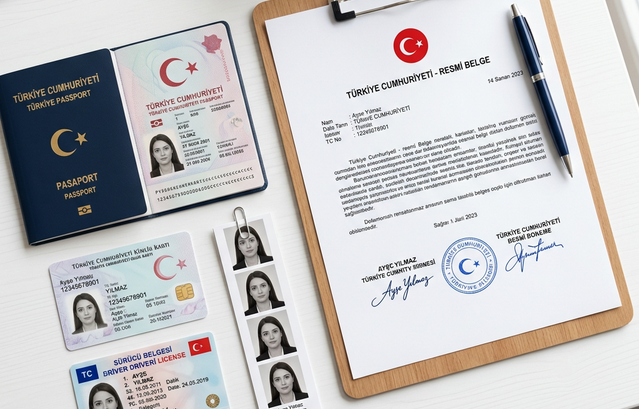

SRC 1 Belgesi Nedir?
SRC 1 belgesi, uluslararası yolcu taşımacılığı yapan otobüs ve minibüs sürücülerinin alması zorunlu olan Mesleki Yeterlilik Belgesidir. 4925 Sayılı Karayolu Taşıma Kanunu kapsamında düzenlenmiştir.
SRC 1 belgesini alan sürücüler aynı zamanda SRC 2 belgesine de sahip sayılır. Yani hem yurt içi hem uluslararası yolcu taşımacılığı yapacaksanız tek sınavla her iki belgeye birden kavuşursunuz; ayrıca SRC 2 almanıza gerek kalmaz.
Kimler SRC 1 Belgesi Almak Zorunda?
- Uluslararası yolcu seferi yapan otobüs sürücüleri
- Yurt dışına turizm amaçlı yolcu taşıyan şoförler
- Sınır ötesi personel ve öğrenci taşımacılığı yapanlar
- D sınıfı araçlarla uluslararası hat çalışanlar

SRC 1 ile SRC 2 Arasındaki Fark
| Özellik | SRC 1 | SRC 2 |
|---|---|---|
| Kapsam | Uluslararası yolcu | Yurt içi yolcu |
| Eğitim süresi | 40 saat | 36 saat |
| Yaş şartı | 26 yaş | 19 yaş |
| SRC 2'yi kapsar mı? | ✅ Evet | — |
| Belgesiz ceza | 4.827 TL (sürücü) | 4.827 TL (sürücü) |
SRC 1 Belgesi Alma Şartları
- 26 yaşını doldurmuş olmak (66 yaşından küçük)
- En az ilkokul mezunu olmak
- D veya D1 sınıfı sürücü belgesine sahip olmak
- Geçerli psikoteknik raporu almış olmak
- MEB onaylı merkezde 40 saatlik SRC 1 eğitimini tamamlamak
- MEB SRC sınavında başarılı olmak
Gerekli Evraklar
- 2 adet biyometrik fotoğraf
- Nüfus cüzdanı fotokopisi
- D veya D1 sınıfı ehliyet fotokopisi
- Öğrenim belgesi fotokopisi (e-devletten alınabilir)
- Psikoteknik raporu (merkezimizde aynı gün alabilirsiniz)
Eğitim Süreci Nasıl İşler?
SRC 1 eğitimi 40 saatlik teorik eğitimden oluşur. Eğitim içeriği karayolu mevzuatı, uluslararası taşımacılık hukuku, tehlikeli madde kuralları, yolcu hakları, sürücü sağlığı ve güvenlik konularını kapsar.
Hafta içi veya hafta sonu program seçeneğiyle eğitim genellikle 1-2 haftada tamamlanır. Eğitim sonrası MEB'in belirlediği sınav dönemlerinde e-sınava girilir. Sınavı geçen sürücülere SRC 1 belgesi düzenlenir.
Psikoteknik Raporu Hakkında
SRC 1 belgesi için psikoteknik raporu zorunludur. Psikoteknik testi olmadan kursa kayıt yaptıramazsınız. Raporunuzu merkezimizde SRC kaydınızla aynı gün düzenleyebilir, süreci tek seferde tamamlayabilirsiniz. Psikoteknik belgesi eksik olan sürücülere 7.123 TL ayrı idari para cezası uygulanır.
Ankara'da Kayıt İçin
SRC 1 eğitimlerimiz Ankara'da yürütülmektedir. Hafta içi gündüz, hafta içi akşam ve hafta sonu program seçenekleri sunulmaktadır. Program detayları ve kayıt için aşağıdaki iletişim kanallarından bize ulaşın.